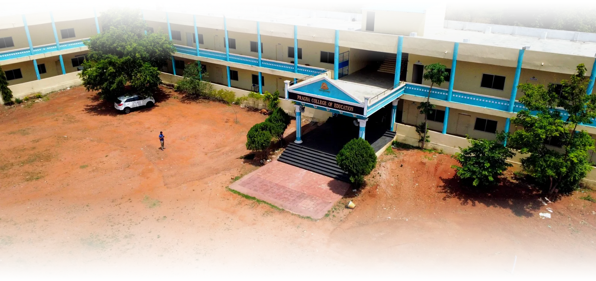

Undergraduate
Bachelor of Education
B.Ed
A two-year teacher education programme for graduates who want to build strong subject teaching and classroom-management skills.

Pragna College of Education trains the educators who will shape the next generation of classrooms — grounded in practice, driven by purpose.
Established in 2004, Pragna College of Education is committed to preparing thoughtful, confident and classroom-ready educators.
Our programmes combine academic foundations with practical teaching experience, mentoring and a strong understanding of how students learn.
Teaching practice is integrated into the learning journey, not treated as an afterthought.
Faculty guide each student through pedagogy, planning and professional development.
Graduates leave prepared to contribute meaningfully from their first day in the classroom.
Two focused programmes, both designed around strong pedagogy and real classroom readiness.
A two-year teacher education programme for graduates who want to build strong subject teaching and classroom-management skills.
A foundational programme focused on early years and elementary education, child development and engaging teaching methods.